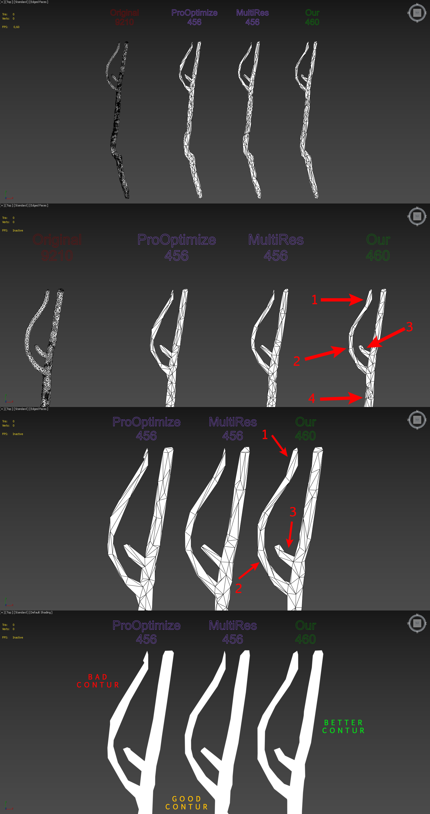
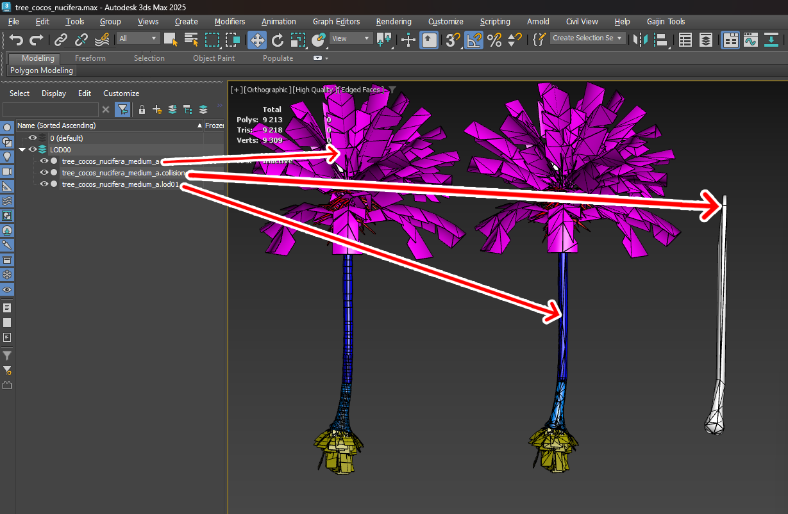

Dagor LODs and Collisions Generator
Installation
Install the script following the provided instructions.
3ds Max Version Requirement
This script requires 3ds Max 2018 or later.
Overview
This script provides superior triangle optimization compared to tools like MultiRes or ProOptimizer. It simplifies the process by requiring only a single button press. The script more accurately preserves texture coordinates and texture coordinate edges. Additionally, the advanced features support high-quality collision generation and specific settings tailored for the Dagor Engine.
Comparison of Optimization Quality
The following image illustrates the differences in optimization quality:
{kind=link}
Key Advantages
More Accurate Contour Representation. The optimized model more closely follows the original object’s contours.
Increased Segment Density. More segments are generated along the radius, resulting in a finer mesh.
Enhanced Knot Detail Preservation. Critical details, such as knots, are retained, which are often lost in other optimization methods.
The script optimizes the placement of triangles more effectively, ensuring the shape of the object is conveyed with greater precision, even with the same number of triangles.
Accessing LODs and Collisions Generator
Navigate to Gaijin Tools 1 > LOD Generator… 2. This will open the main window of the Dagor LOD Generator.
To verify the version 3 of the script, go to Gaijin Tools > About. The About window will display the current version. It’s important to check this regularly to ensure your script is up to date.
Plugin Version Requirement
Requires plugin version 1.4 or higher.
{kind=link}
Using LODs and Collisions Generator
To open the script window, navigate to Gaijin Tools > LOD Generator… in the menu.
{kind=link}
Key Parameters and Controls
Vertex % 1: defines the percentage by which the number of triangles is reduced in each LOD (level of detail). For example, LOD01 will contain 50% of the original model’s triangles, LOD02 will have 25%, and so on.
Iterations 2: specifies the number of iterations for the optimization algorithm. Higher iterations generally yield better quality in point placement. The optimal number of 10 was determined experimentally, though in some cases, using the maximum allowable value is recommended.
Number of LODs: specifies how many LODs will be created.
Engine Optimization Type 3: Allows you to choose a more appropriate optimization algorithm for certain tasks. MultiRes is more suitable for tasks with aggressive LODs optimization. ProOptimizer is more flexible in optimization settings.
Protect Borders 4: Open edges will be excluded from the optimization process. This allows them to be left without distortion.
Keep UV Bondaries 5: Points that contain edges of UV coordinates will be excluded from optimization. Allows you to keep undistorted UV coordinates on edges untouched.
Build LODs! 6: initiates the generation process. The script can batch process all selected models, creating LODs or collisions for each.
Supported Model Types
The script works correctly with Edit Poly, Edit Mesh, and GrowFX model types. Other model types are not supported and may cause errors. Note that all modifiers applied to LODs and collisions will be removed if they were used on the model from which LODs or collisions are generated.
This basic functionality covers the use of MultiRes and ProOptimizer. For users familiar with these tools, the script should suffice for achieving optimal results. For more advanced collision generation and further optimization without visual quality loss, consider exploring the advanced settings detailed below.
Advanced Options
Loading the Test Scene
Load the following test scene:
tree_cocos_nucifera.max.3ds Max Version Requirement
This scene requires 3ds Max 2021 or later.
This scene features a complex object with a Multi/Sub Material applied. It is crucial that Sub Materials are correctly named, as this influences collision generation.
Material Keyword Filtering
In Keep Material Name field 14, you can enter keywords separated by commas to specify which materials should be retained during collision generation. For example, on a palm tree, you might exclude roots and fruits but retain anything named “bark”. Materials matching the specified keywords will be preserved, while all others, along with their associated triangles, will be removed.
Example: highlight the palm tree. Enter
barkin field 14. Run the script by clicking Build LODs! button 6. The result will show that all unnecessary triangles (e.g., leaves, roots, fruits) have been removed from the collision generation:This filtering can be toggled off using Collision Use Name Mask checkbox 9.
Warning
If the object does not have a Multi/Sub Material, the script will issue a warning and skip processing. No changes will be made in such cases.
Collision Height Cutoff
Enabling Collision Cut From Top checkbox 8 allows you to cut off the collision mesh at a specified height, set in Collision Cut Height parameter 13. This can be useful for optimizing performance by removing unnecessary upper parts of the collision mesh, such as branches or trunks that characters cannot interact with.
Example: highlight the palm tree and set the desired cutoff height in parameter 13. Run the script with Build LODs! button 6 again to see the result:
Additional Options
Collision Generation 7: enables or disables collision generation.
Custom Properties allows replaced by default custom object properties with those specified in fields LODs Custom Properties 15 for LODs and Collision Custom Properties 16 for collisions.
Collision Remove Small Parts 10 and Collision Part Size % 12. This feature will allow the removal of small, non-essential parts of the object (e.g., small twigs or debris) based on their bounding box size. This will help optimize LODs and collisions.
Support
Open Local Documentation 18: provides access to this article.
Contact with Developer 19: provides access the developer’s web page.
{kind=link}
{kind=link}
{kind=link}